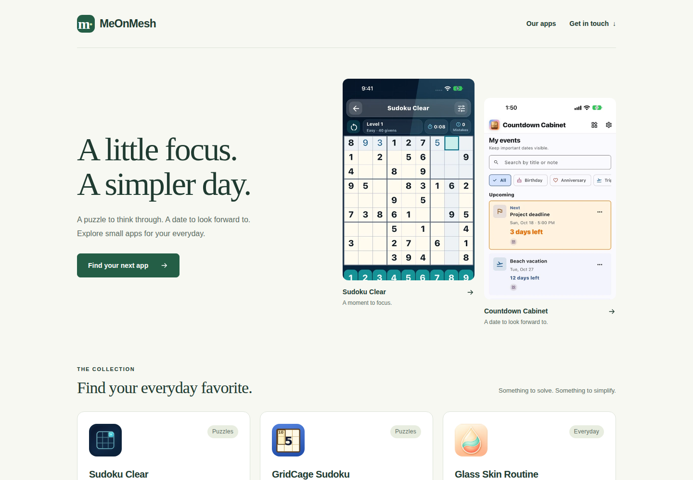
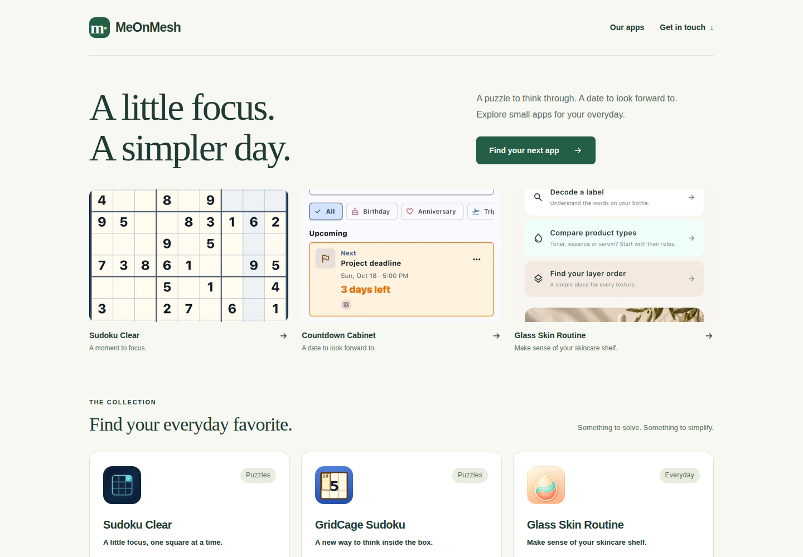

앱이 먼저 보이는 첫 화면.
MeOnMesh 홈페이지 상단만 바꾼 두 시안입니다. 같은 문구·색·글꼴로 구성해 배치의 차이를 비교할 수 있습니다. 이미지나 버튼을 누르면 전체 페이지를 살펴볼 수 있습니다.
A안 · 두 앱에 집중
소개 문구 옆에 Sudoku Clear와 Countdown Cabinet의 화면을 크게 배치했습니다. 앱 화면의 맥락이 보이고, 모바일에서도 두 앱을 나란히 볼 수 있습니다.



B안 · 세 가지 일상의 장면
소개 아래에 퍼즐·중요한 날짜·스킨케어 가이드의 화면을 가로로 펼쳤습니다. 모바일에서는 다음 장면의 일부가 보여 옆으로 넘겨 볼 수 있습니다.



비교할 때 볼 점
A안은 앱 화면을 좀 더 온전하게 보여주고, B안은 앱에서 무엇을 하는지 큰 장면으로 보여줍니다. 두 안 모두 화면을 누르면 해당 앱의 기존 소개 페이지로 이동합니다. B안의 모바일 갤러리는 터치와 키보드 방향키로 탐색할 수 있습니다.
앱 목록, 스토어·지원·개인정보 링크와 공통 광고 판매자 파일은 보존했습니다. 이 페이지는 선택을 위한 로컬 시안이며, 공개 홈페이지는 교체하지 않았습니다.